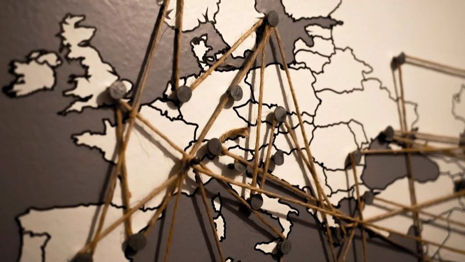

Tensions internationales : se préparer sans paniquer
Le contexte international inquiète parfois. Le guide « Tous responsables » rappelle qu'une bonne préparation est la même face à toutes les crises : pouvoir tenir quelques jours, bien s'informer et s'entraider. Pas besoin de céder à la peur.

Informations pratiques, sources officielles (guide « Tous responsables » (SGDSN, 2025)). Elles ne remplacent pas les consignes des autorités. En cas d'urgence, appelez le 112 et suivez les consignes de la préfecture, de la radio et de FR-Alert.
L'essentiel
- Préparez un kit d'urgence pour 72 h : eau potable, aliments non périssables, médicaments essentiels, papiers importants, lampe et radio à piles.
- Gardez une radio à piles et suivez les sources officielles.
- Établissez un plan familial de mise en sûreté.
- Faites connaissance avec vos voisins, surtout les plus isolés.
Pas besoin de tout faire aujourd'hui. En 15 minutes, vous pouvez déjà :
- Constituer un kit d'urgence de base
- Choisir deux sources d'information fiables
- Convenir d'un plan simple avec vos proches
Chaque petit pas compte.
Pourquoi se préparer ?
Une crise grave peut entraîner des coupures d'électricité, de réseaux ou d'approvisionnement pendant quelques jours. Être prêt permet de rester calme, de protéger ses proches et de laisser les secours aider les plus fragiles. C'est le sens du guide « Tous responsables ».
Ce que vous pouvez faire
Être autonome 72 heures
- Eau, nourriture, lampe, radio à piles, médicaments
- La liste complète
Bien s'informer
- Privilégier les sources officielles et la radio
- Se méfier des rumeurs et des fausses informations
S'entraider
- Connaître ses voisins, surtout les plus fragiles
- Se former aux premiers secours, rejoindre une réserve ou une association
Garder la tête froide
Se préparer n'est pas s'alarmer. Si l'actualité vous angoisse, limitez le temps passé sur les écrans et parlez-en avec vos proches. Les consignes des autorités priment toujours.
Questions fréquentes
Le gouvernement demande-t-il de se préparer à une guerre ?
Le guide « Tous responsables » invite chaque foyer à se préparer à toutes les crises, quelle qu'en soit la cause, notamment en ayant un kit pour tenir 72 heures.
Que faut-il stocker en cas de tensions internationales ?
La même chose que pour toute crise : eau, nourriture non périssable, lampe, radio à piles, médicaments, papiers et un peu d'argent liquide.
Où trouver des informations fiables ?
Auprès des sites officiels du Gouvernement, de votre préfecture et à la radio publique.
À lire aussi